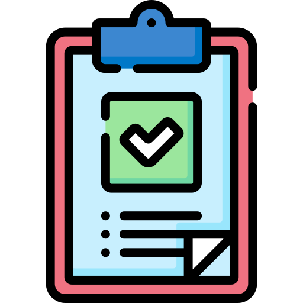

Upravljanje turnirima
Stranica za upravljanje turnirima. Na ovoj stranici mozete izmeniti turnire, dodavati turnire i brisati turnire.

Upravljanje prijavama
Na ovoj stranici možete pogledati sve prijave timova na turnire i možete upravljati njima, odnosno možete odbijati i prihvatati prijave.
Upravljanje rezultatima mečeva
Na ovoj stranici možete unositi rezultate mečeva što automatski dovodi do napredovanja pobedničkih timova.
Katalog igara
Lista svih igara dostupnih za turnire. Ovde možete dodavati ili brisati postojeće igre iz sistema.
Svi korisnici
Pregled liste svih korisnika i nekih od njihovih podataka. Moguća je izmena uloge korisnika.
Health dashboard
Pregled opterećenosti i health statusa baze podataka. Neophodno za praćenje performansi aplikacije.
Audit log
Evidencija i pregled svih interakcija prijavljenih korisnika sa sajtom zabeležene na jednom mestu.